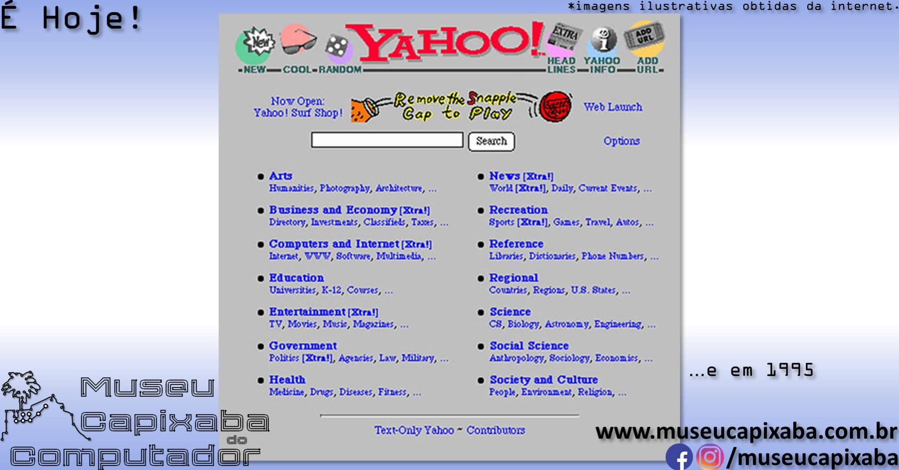

JavaScript1 - Conhecer a história do JavaScript e compreender suas funções básicas.
História e função do JavaScript
Origem da linguagem JavaScript
Imagina que você precisa acessar um site e ele é parecido com o da imagem de exemplo. Você estranharia, certo? Mas, antes do avanço tecnológico, os sites eram assim. Hoje, você vai conhecer a linguagem JavaScript, que veio para melhorar o desenvolvimento web e trazer uma interação para as páginas que antes quase não existia.
Em 1995, Brendan Eich (1961- ) criou a linguagem de programação JavaScript. Originalmente, ela era denominada "Live Script" pela empresa Netscape. Seu objetivo inicial era validar formulários HTML, porém, atualmente, JavaScript é bastante utilizada pelo client-side, ou seja, uma linguagem executada no computador do usuário.

Função da linguagem JavaScript
A principal função da linguagem JavaScript é permitir ao programador implementar itens mais complexos em um site. Imagine que você acessa um site, insere seus dados e clica no botão “calcular”. Então, ele calcula o seu Índice de Massa Corporal (IMC), retornando um valor no final. Essa tarefa foi uma função escrita em JavaScript.

Então, há um código JavaScript operando em todo site que permite que o usuário interaja com ele. Páginas estáticas são mais prováveis de não ter essa linguagem em sua construção, por exemplo, um site com apenas um texto estático e nenhum tipo de interação.
Características
Normalmente, em uma linguagem de programação convencional, quando um código é criado e colocado para executar na máquina, ele funcionará. No entanto, se tentar rodar o mesmo código em uma máquina de sistema operacional diferente, é bem provável que ele não opere. Isso acontece porque cada sistema operacional tem seu jeito específico de interpretar o seu código. Mas, a linguagem JavaScript independe de plataforma, pois seus os comandos são interpretados pelo browser (navegador) do próprio usuário.
Imagine que o seu navegador traduz para o seu sistema operacional. Com JavaScript, não é necessário fazer um código próprio para cada tipo de sistema. Um exemplo prático é o que acontece com aplicativos de celular que são programados duas vezes: uma para funcionar no sistema iOS (Apple) e outra no Android (Google).
A trindade das linguagens
A trindade de linguagens para o desenvolvimento web front-end é composta pelas linguagens HTML, CSS e JavaScript. HTML é responsável pela estrutura da página, CSS, pela parte de edição da página e JavaScript, por toda a lógica envolvida na página web. Comparando com o corpo humano, HTML é o esqueleto, CSS, a pele e JavaScript, o cérebro.